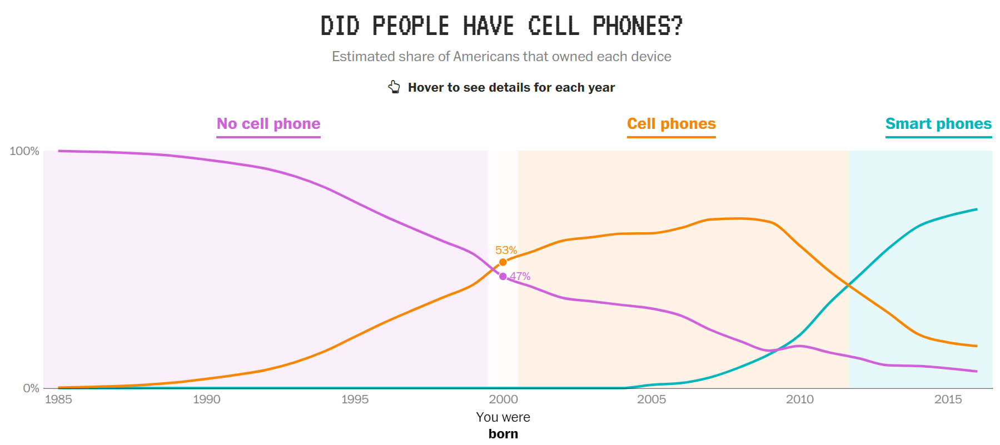

subtitle: “DS202 Data Science for Social Scientists†title: â€œğŸ—“ï¸ Week 01
Structure of this course†author: Dr. Jon Cardoso Silva institute: ‘LSE Data Science Institute’ date: 30 September 2022 date-meta: 30 September 2022 toc: true toc-depth: 1 toc-title: “What we will cover today†center-title-slide: false from: markdown+emoji format: revealjs: fig-responsive: true theme: simple slide-number: true mouse-wheel: false chalkboard: buttons: true preview-links: auto logo: /figures/logos/LSE Data Science Institute.png css: /css/styles_slides.css footer: ‘DS202 - Data Science for Social Scientists :robot: :juggling_person:’ —
Who are we
The Data Science Institute

- This course is offered by the LSE Data Science Institute (DSI).
- DSI is the hub for LSE’s interdisciplinary collaboration in data science
The Data Science Institute

Activities of interest to you:
- CIVICA Seminar Series
- Careers in Data Science
- Social events
- Industry “field trips”
- Summer projects
Our courses
DSI offer accessible introductions to Data Science:
DS101
Fundamentals of
Data Science
🯠Focus:
theoretical concepts of data science
📂 How:
reflections through reading and writing
DS105
Data for
Data Scientists
🯠Focus:
collection and handling of real data
📂 How:
hands-on coding exercises and a group project
DS202
Data Science for
Social Scientists
🯠Focus:
fundamental machine learning algorithms
📂 How:
practical use of ML techniques and metrics
Your lecturer
- Also present the teaching assistants
Who are you
BSc Psychological and Behavioural Science
Data extracted from the UBPBS 2020/2021 degree regulation.
Add the overlaid graph, showing the actual paths these students took.
Learning Objectives
- Understand the fundamentals of the data science approach, with an emphasis on social scientific analysis and the study of the social, political, and economic worlds;
- Understand how classical methods such as regression analysis or principal components analysis can be treated as machine learning approaches for prediction or for data mining.
- Know how to fit and apply supervised machine learning models for classification and prediction.
Learning Objectives (cont.)
- Know how to evaluate and compare fitted models, and to improve model performance.
- Use applied computer programming, including the hands-on use of programming through course exercises.
- Apply the methods learned to real data through hands-on exercises.
- Integrate the insights from data analytics into knowledge generation and decision-making;
Learning Objectives (cont.)
- Understand an introductory framework for working with natural language (text) data using techniques of machine learning.
- Learn how data science methods have been applied to a particular domain of study (applications).
Philosophy of this course
- It is important to understand the ideas behind the various techniques, in order to know how and when to use them.
- One has to understand the simpler methods first, in order to grasp the more sophisticated ones.
- It is important to accurately assess the performance of a method, to know how well or how badly it is working (simpler methods often perform as well as fancier ones!).
Content borrowed from ME314 Day 1
Philosophy of this course (cont.)
- This is an exciting research area, having important applications in science, industry and policy.
- Machine learning is a fundamental ingredient in the training of a modern data scientist.
Content borrowed from ME314 Day 1
What do you need to know to get the most of this course?
The basics of statistics
Basic concepts of Statistics you might want to recap:
- Expected value, mean, median, variance, standard deviation
- Probabilities and simple probability distributions
- Types of data
- discrete vs continuous
- categorical vs numerical vs ordinal
Resources (Stats)
A few references that might be useful to read or skim through:
- (Warne 2018, chaps. 1-3,5,6,11-12)
- (Gelman, Hill, and Vehtari 2020, chaps. 1–4)
- If you are a PBS student, you can revisit the content of
PB130 (MT3, MT4, MT8-MT11)
The basics of R programming
Basic concepts of programming in R to recap:
- data structures (vectors, matrices, data frames)
- how to manipulate data (filter, subset, select)
- read/write data files (for example: CSV, JSON, TXT)
- (optional but encouraged) some knowledge
tidyversecan give you a productive boost- the official website (tidyverse.org) has some good tutorials.
Resources (R)
- Check out “R for Data Science†(Wickham and Grolemund 2016, chaps. 1–21). The online version is free.
- “Statistical inference via data science†(Ismay and Kim 2020, chaps. 4–6) is another great free resource
‘What if I struggle with R’?
➡️ Our first lab (Week 02) is a recap of some basic R commands, plus some ggplot2.
- If you are not confident with your
Rskills, I strongly encourage you invest in studying the basics in the next couple of weeks. - Contact LSE Digital Skills Lab to attend in-person workshops or self-paced online R courses.
Any questions?

Structure of this course
Syllabus
| Intro | |
|---|---|
| Introduction, Context & Key Concepts | Week 01 |
| Supervised Learning | |
| Simple and Multiple Linear Regression Classifiers (Logistic Regression & Naive Bayes) Resampling methods Non-linear algorithms (SVM & tree-based models) |
Week 02 Week 03 Week 04 Week 05 |
| Unsupervised Learning | |
| Principal Component Analysis (PCA) & Clustering Dimensionality Reduction (t-SNE & UMAP) |
Week 07 Week 08 |
| Applications | |
| Applications: Text as Data Applications: Topic Modelling Applications: Social Media Data |
Week 09 Week 10 Week 11 |
Structure of lectures 👨🏻‍:school:
Our lectures will be split in two parts:
- Part I (~ 50 min): Traditional exposition of theoretical content
- break (~ 10 min): Grab coffee :coffee: or relax :lotus_position:
- Part II (~ 50 min): Live demo
- Typically, an exploratory analysis or application of an algorithm
- Feel free to follow along in your own laptops.
Structure of classes :woman_technologist:
- Students will work on weekly, structured problem sets in the staff-led class sessions.
- Tips to get the most of classes:
- Bring your own laptops :computer: (most tablets are not suitable for programming)
- Read the recommended reading prior to the class
- Skim through the problem set before class
Class groups
Update the groups here once we hear back from LSE Timetables
Assessments :notebook_with_decorative_cover:
The breakdown of assessment for this class will be as follows:
Assessments :notebook_with_decorative_cover:
Problem sets (60%)
- Summative problem sets released on Weeks 5, 8 & 11.
- These will have a similar style to the formative problem sets, a mix of
Rtasks and your written interpretation of the analyses. - You will have 4-6 days to submit your solutions.
- Each of the three summative problem sets is worth 20% of the final mark, and will be graded on a 100 point scale.
Assessments :notebook_with_decorative_cover:
Take-home exam (40%)
- An open-book take-home exam, taken during the January exams period.
- Exam questions will be comparable in style to the problem sets.
- The exam questions will be released on Moodle on 5 January 2023.
- The exam is due on 11 January at 4pm.
Office hours
- It is probably a good idea to book office hours if:
- you struggled with a technical or theoretical aspect of a problem set in the previous week,
- you have queries about careers in data science,
- you want guidance in how to apply data science to other things you are studying outside this course.
- Come prepared. You only have 15 minutes.
- Ask for help sooner rather than later.
- Book slots via StudentHub up to 12 hours in advance.
Communication
- Join our Slack group: add link to slack
- Use the public Slack channels to talk to share links, content (or memes) with your colleagues.
- Our teaching team will dedicate some time during the week to answer questions or other interactions on Slack.
- Reserve :email: e-mail for formal requests: extensions, deferrals, etc.
- No need to e-mail to inform you will skip a class, for example.
Any questions?
How did we get here?
- and how did we get to the point that we can collect, extract and analyse all of this data?
- Well, this abundance of data is strongly associated with the dramatic changes in technology we have experienced recently.
- Take a look of the technology people were using back in 2005.
- This photo was taken outside St. Peter’s Basilica in the Vatican at the time Ratzinger was ordained as pope
- Now, fast forward to 2013 — only 8 years later — when Pope Francis was elected the new pope, and you will see a lot of bright screens.
- Our habits have changed
This abundance of data is strongly associated with the dramatic changes in technology in the past few decades.
St.Peter’s Basilica at the Vatican in
📅 19 April 2005
when Ratzinger
was elected the 265th pope.
St.Peter’s Basilica at the Vatican in
📅 13 March 2013
when Pope Francis
was elected the 266th pope.
We changed how we consume music 🎧

We changed how we consume video 🎞️

Smartphones 📱 are a very recent thing

We spend a lot more time connected
The possibilities
- Humans and machines nowadays generate A LOT of data ALL THE TIME
- It has become cheap to collect and store this data
- This abundance of data opens up new possibilities for research & policy-making
New data to answer old questions:
How do rumours spread?
New questions enabled by new data:
Is social media a threat to democracy?
What’s next
After our 10-min break ☕:
- Given all this, what do we mean by data science?
- A tale of unicorns
- How do machines learn?
- Different types of learning
- What to expect of the rest of this course
- The tools you will need